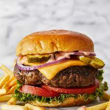

Something interesting about me would be that I occasionally drive
for 4 hours to get to my grandparents house to spend time with them.
I like the food because it has great flavour and a nice smell when cooked correctly
These are 4 sports that I think are pretty fun and you should definitely check out!
| Sport | Reason | Avg. Hours |
|---|---|---|
| Soccer | It's a fun sport that I used to play when I was younger. | 30 |
| Football | It is very popular within the United States. | 20 |
| MMA | While brutal, the fights are at the very least real as compared to WWE. |
40 |
| Skydiving | You get to jump out of a plane and freefall which is a very relaxing feeling |
5 |
>How to style a checkbox using CSS
The selectors here are specific to Wufoo markup, but the concepts at work can work for any form. The overall idea is that you make the default radio buttons and checkboxes invisible by setting their opacity to zero, and replace them with graphics. Then use the :checked selector to alternate the graphics between their checked and unchecked versions. /* Hide the original radios and checkboxes (but still accessible) :not(#foo) > is a rule filter to block browsers that don't support that selector from applying rules they shouldn't */ li:not(#foo) > fieldset > div > span > input[type='radio'], li:not(#foo) > fieldset > div > span > input[type='checkbox'] { /* Hide the input, but have it still be clickable */ opacity: 0; float: left; width: 18px; } li:not(#foo) > fieldset > div > span > input[type='radio'] + label, li:not(#foo) > fieldset > div > span > input[type='checkbox'] + label { margin: 0; clear: none; /* Left padding makes room for image */ padding: 5px 0 4px 24px; /* Make look clickable because they are */ cursor: pointer; background: url(off.png) left center no-repeat; } /* Change from unchecked to checked graphic */ li:not(#foo) > fieldset > div > span > input[type='radio']:checked + label { background-image: url(radio.png); } li:not(#foo) > fieldset > div > span > input[type='checkbox']:checked + label { background-image: url(check.png); }Source